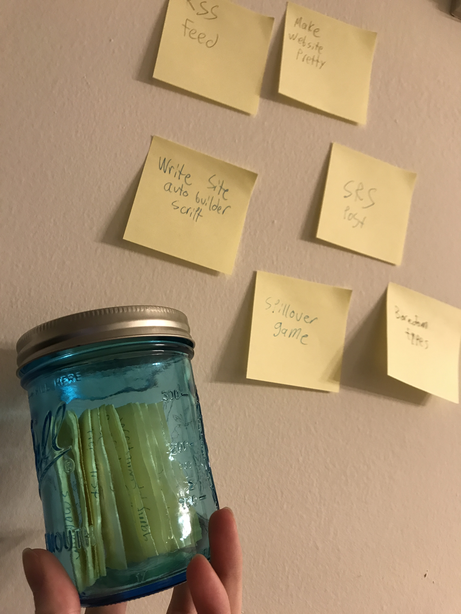

Cognitive Science Student, CS Enthusiast, Melee Player, Button Presser
Draft: v1.0 | Posted: 2/28/2018 | Updated: 2/28/2018 | confidence of success: 5% | estimated time to completion: 2/27/2018 | importance: Low
Something I've found myself unable to articulate well recently has been the nuance behind a particular kind of boredom I have been feeling. More specifically, I think that the word "boredom" is a bit too wide-encompassing for the range of emotions it is supposed to represent, so I decided to write a little bit about it just so I have something to link to people in the future.
In short, I think there are two types of boredom, which I will call "Type 1 Boredom" and "Type 2 Boredom". Type 1 Boredom is a "foreground" state, in which you do not know what to do. Type 2 Boredom, on the flipside, is a "background" state, in which you are actively playing a part in something boring. Both of these problems involve very different solution spaces, and they feel very different, but are nonetheless all thrown under the same umbrella of boredom as if they represented the same idea.
Type 1 Boredom describes a state of mind in which you are doing nothing, and cannot think of something to do. This is a more spacey, aloof sort of feeling, and a very common way people tend to deal with this type of boredom is by endlessly surfing social media until they are forced to do something else.
Type 1 Boredom is the boredom everybody associates with the word "boredom", and also the type of boredom that always has the easiest solutions. I frequently see "how to stop being bored" type posts on most run-of-the-mill productivity blogs and most of them go something like the following:
15 COOL WAYS TO BEAT BOREDOM (#4 WILL BLOW YOUR MIND)
1: DO SOME PUSH UPS
[attached is a gif of wonder woman doing pushups]
2: READ A GOOD BOOK
[attached is an image of a cat that looks like it is reading a book]
so on and so forth.
I think this sort of advice is unhelpful because type 1 boredom isn't really about knowing literally nothing that would be interesting to you (I sincerely doubt almost anybody reading a list of "things to do when you are bored" could not have easily written down a similar "things I could be doing right now" list in 25 seconds). Type 1 boredom is mostly, in my view, a symptom of poor capturing.
Put another way, I think most people are perfectly capable of filling virtually all of their time with things that they uniquely find to be interesting, but often fall prey to type 1 boredom simply because they cannot decide what best to do. You could call this a type of analysis paralysis, but I think the particulars of it is a little different - type 1 boredom rears its head most frequently when you do not have a strong grasp of the list of things you want to do, and your mind goes blank since you can't even begin to narrow the solution space to a tangible list (I.e. the difference between "tell me a cool fact" and "tell me the capital of Mali"). An oft-cited anecdote from Zen and the Art of Motorcycle Maintenance is the bit where a girl in the narrator's writing class, completely stumped on how to write an essay on Main Street of their town, is able to write freely once he instructs her to write about one brick in one building on the street. The difficult part isn't coming up with answers from a solution space - it's coming up with a solution space.
To make an analogy, imagine you are on a date, and you are trying to decide where you want to go.
You: "Where do you wanna go?"
Date: "I dunno, where do you wanna go?"
You: "Hmm, I dunno, what are you in the mood for?"
Date: "uhh, maybe pizza?"
You: "Nah, we had pizza last week, let's do something different"
Date: "So, what do you wanna go eat?"
You: "I dunno..."
The problem in this situation isn't that you literally cannot think of places that you can eat, even though most of the "solutions" offered by "how not to be bored" articles treat the problem this way. For example, you wouldn't write an article titled "how to decide what kind of food to get on a date" in which "option 1" is just "go to the nearest Chinese food restaurant". You read that and think "well of course I could go there", and some people might bookmark your article and regularly consult it when they can't decide where to go, but the methodology is all wrong. It's not actually a solution to the problem, it's just a list of cached answers.
This is a problem with a bunch of small solutions, and the best way to do this is to just write things down so you don't forget what you want to do. People do this sort of thing in different ways, but organizing yourself so that you have a humongous queue of cool things to do is such a worthwhile task that I think it's worth saying even if it sounds overly simple.
The nice thing about writing things down is that it's not limited to any particular hobby or field. If you are into books, you can keep an account on Goodreads and mark a book "to read" if you ever encounter a book you plan on reading. If you like anime, you can keep an account on MyAnimeList. There's websites for tons of these type of things, and if there isn't then you can just use a spreadsheet or a text document somewhere (I often use evernote and google docs). If you want to keep track of your projects, invest a few quarters into a stack of post-it notes and put one on your wall behind your desk whenever you think of a new project. Want to measure your progress? Purchase a jar, and when you complete a project put the post-it note into the jar when you complete it. This isn't exactly rocket science, you just have to have easily accessible, visible lists of things to do.

To continue our dinner date analogy, you can imagine writing down the name of a restaurant every time you and your date pass a restaurant and think "oh we should go here one day". Then when you need to select a place to eat, you can pick one literally at random. If you're not feeling it, you can pick another one at random, repeating until you find one you like. This "problem" is so non-existent that it ceases to be a problem, because you're offloading the task of generating the initial list of possibilities to the outside world.
It's the easy boredom.
Type 2 boredom is, by far, the most difficult type of boredom; it's a type of boredom that reaches far beyond the present moment. This sort of boredom is a systemic, deeply rooted ennui that follows you around when you are actively doing something and still feel bored. If type 1 boredom is the toe-stubbing pain of boredom, type 2 boredom is the lingering miasma after a particularly violent breakup.
In short, it's when you're bored and you can't consult buzzfeed to figure out how to not be bored.
I am of the opinion that this is simultaneously the most troubling type of boredom, as well as the most important to notice. It's not too hard to notice easy, type 1 boredoms, partially because they are acute and usually rather fleeting (man, folding laundry sucks). Type 2 boredom is by nature chronic and systematic, and those things are generally much harder to notice (compare this to Sleep Apnea, which affects 20% of the population despite 90% being undiagnosed, and significantly increases your mortality rate). It takes a great deal of introspection to be able to assess your current circumstances and conclude "I find my job / major / hobby deeply boring", or even worse "I find my life boring". Even if you are capable of doing so, it takes a great deal of initiative to even begin tackling such a problem.
Eliezer Yudkowsky, in Harry Potter and the Methods of Rationality, writes on a great mental habit where when you feel confused about something, you commit your confusion to conscious thought, rendering you unable to convince yourself that you understand.
He could have avoided every single one of his mistakes if he'd just applied the things Harry had already told him - Draco said out loud, "I notice that I am confused." Your strength as a rationalist is your ability to be more confused by fiction than by reality... Draco was confused. Therefore, something he believed was fiction. Granger should not have been able to do all that. Therefore, she probably hadn't.
And a variation of this that I've been implementing for a while is the idea of noticing when you are bored. Committing all of your boredom to conscious thought allows for two (in my view, very good) things:
I don't quite have all the experience in the world with defeating all types of boredom (I spend a bit too much headspace in type 2 boredom for my own liking), but I've made it a personal mission of mine to delete as much of it from my life as possible.
Every type 1 bored feeling is either a failure or a transitory state, every type 2 bored feeling is a dissatisfaction to be eliminated. Identifying and naming the problem is the first step towards solving them, and this short blog-type post, however small, is a step towards reaching this goal.
posted on 2/28/18